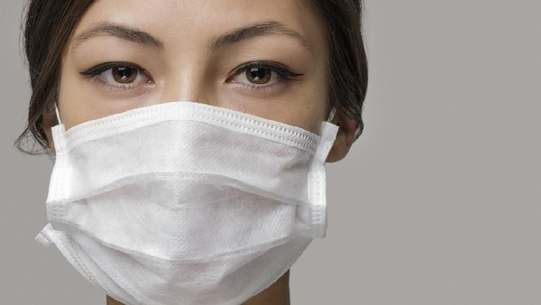

PENCEGAHAN FLU BURUNG
Penyebaran virus flu burung memang sulit untuk dicegah. Namun, kita sudah seharusnya melakukan hal-hal yang dapat meminimalkan risiko terjangkit penyakit ini. Nah berikut langkah pencegahan flu burung yang perlu diketahui.
- Melakukan vaksinisasi, tetapi belum ada vaksin yang efektif untuk mencegah flu burung. Namun kamu bisa melakukan vaksin flu setiap tahunnya untuk menurunkan risiko terjadinya mutasi virus
- Jangan berdekatan dengan orang yang terinfeksi
- Menghindari kontaminasi dengan tinja, sekret unggas, binatang, bahan, dan alat yang dicurigai tercemar oleh virus
- Selalu menjaga kebersihan tangan dengan mencuci tangan secara rutin dan menyeluruh
- Menggunakan pelindung (masker, kacamata)
- Pastikan mengonsumsi daging atau telur unggas yang telah dimasak dengan baik yaitu pada suhu 80º C selama 10 menit untuk daging dan pada suhu 64º C selama 5 menit untuk telur unggas.
- Bila memelihara unggas, pastikan kandang selalu bersih dan berilah jarak minimal 25 meter antara tempat pemeliharaan unggas dengan pemukiman.
(source : www.halodoc.com dan www.ichrc.org)